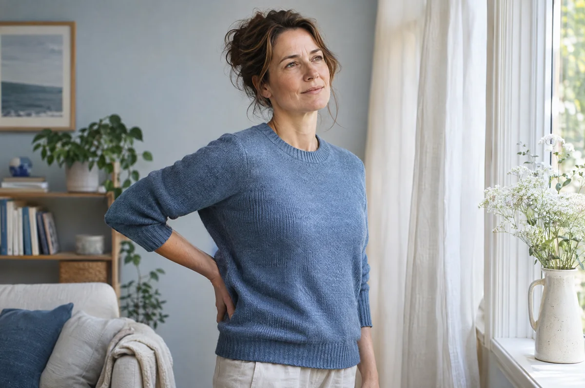

Спина и поясница · 2 мин чтения
Заболела поясница: с чего начать
Что означает новый эпизод боли, какие изменения отслеживать и когда обращаться за помощью.
18 ноября 2026 · Редакционный разбор

Новый эпизод боли в пояснице может мешать вставать, наклоняться и работать. Для выбора помощи важны обстоятельства, сопутствующие симптомы и то, как меняются повседневные возможности.
В этой статье
Боль — повод оценить состояние
У боли в пояснице бывают разные причины. Врач уточняет, началась ли она после нагрузки или травмы, распространяется ли в ногу, есть ли слабость и изменения чувствительности. Название одной структуры, например диска или мышцы, удаётся установить не в каждом случае.
NIAMS описывает осмотр как сочетание разговора и проверки движений, чувствительности, силы и рефлексов. Поэтому по одной точке на рисунке тела или по силе ощущения нельзя достоверно выбрать причину боли.
NIAMS — Back Pain · NIAMS — Back Pain: Diagnosis, Treatment, and Steps to Take
Как организовать ближайшие дни
Если серьёзная причина исключена, в план обычно входят посильная активность и постепенное возвращение привычных действий. Длительный постельный режим может затруднять восстановление. Объём движения подстраивают под переносимость.
Удобнее обсуждать конкретные задачи: дойти до магазина, сесть в автомобиль, поработать за столом. Если какое-то действие резко усиливает симптомы, сообщите об этом специалисту. Лекарства выбирают с учётом других заболеваний и уже принимаемых средств.
Что полезно записать
До консультации составьте короткую последовательность событий. Важно указать не только оценку боли по шкале, но и её влияние на сон, ходьбу и обычные дела. Такая запись помогает сравнить состояние на разных этапах.
- Когда всё началось и что происходило в этот момент.
- Где чувствуется боль и куда распространяется.
- Появились ли онемение, слабость, температура или травма.
- Что стало труднее делать и какие способы помощи уже пробовали.
Когда пересмотреть план
Если боль нарастает, мешает обычным делам или не начинает уменьшаться, стоит обратиться за медицинской оценкой. Повторный осмотр нужен и при новых симптомах, даже если раньше похожая боль проходила сама.
Решение об обследованиях зависит от клинической картины. На консультацию полезно принести прежние заключения и список препаратов, а не назначать себе новый набор исследований заранее.
Вопросы к специалисту
- Какие изменения в моей ситуации требуют повторного осмотра?
- Какой уровень активности сейчас допустим?
- По каким признакам мы оценим, что план помогает?
Источники
Официальные материалы и первичные публикации, использованные в разборе. Проверены при подготовке 18 ноября 2026 года.
Материал помогает ориентироваться в теме и готовить вопросы. Индивидуальные решения об обследованиях, лечении и использовании оборудования принимают с медицинским специалистом.
Связанные вопросы
 Спина и поясница
Спина и поясницаБоль из поясницы в ногу: что такое ишиас
Чем отличается боль по ходу нерва, что фиксировать и какие симптомы требуют срочной оценки.
 Спина и поясница
Спина и поясницаКогда при боли в спине нужна МРТ
Какие вопросы решает исследование и почему его назначают с учётом осмотра.
 Движение и быт
Движение и бытКак возвращать движение после боли в спине
Посильная нагрузка, постепенность и вопросы к специалисту вместо универсального комплекса упражнений.